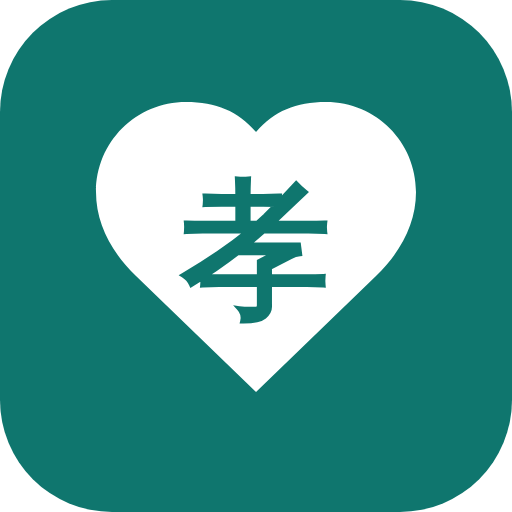

孝親合作
兄弟姊妹一起照顧長輩
把長輩的健康數值、輪值排班、照護日誌和費用分攤放在同一處，不用再翻 LINE 找訊息，也不用私下對帳。
主要功能
- 今日照護：血壓、血糖、用藥進度一眼看完，數值偏高自動警示
- 排班與回診：沒人認領的時段，一鍵「我來」接手；值班前一天晚上提醒
- 照護日誌：自由記錄、自訂分類，看過的家人按「收到」
- 共同帳本：代墊費用自動算出誰該轉給誰，孝親公基金餘額透明
- 任務分工、用藥打卡、附近藥局與採買清單
免費版與完整版
App 免費下載、沒有廣告。「完整版」一次購買、永久使用（不是訂閱），解鎖健康趨勢與匯出量測紀錄給醫師、每月對帳單、照護週報，以及家人超過 5 位（最多 10 位）。換手機時可在「方案與價格」按「恢復購買」。
隱私：不需要註冊或登入，資料只存在你的手機，沒有廣告也沒有追蹤。
常見問題
家人可以同步看到嗎？
目前資料只存在一支手機，家人雲端同步正在開發中。
換手機資料會不見嗎？
目前版本的資料只存在原本的手機，換機或移除 App 前請留意。
提醒沒有跳出來？
請到手機的「設定 → 通知 → 孝親合作」確認已允許通知，並在 App 的「設定與邀請」開啟「值班與任務提醒」。
聯絡與支援
使用上的問題或建議，請來信：goodaycreation@gmail.com